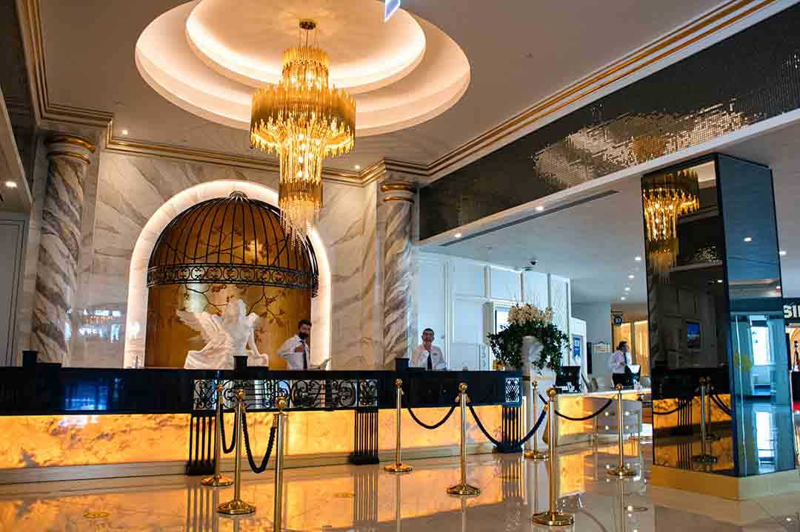

Ratan Vilas

Ratan Vilas

Ratan Vilas

Ratan Vilas
Tucked away from hectic Indian street life, on a substantial tract of land shaded by a canopy of seasoned trees, sits the Ratan Vilas Jodhpur. Weaving through the pillars of this erstwhile family mansion and spilling onto the neatly-manicured lawns and secluded courtyards are stories of Rajput nobility and tales of the bygone era. Located in the pulsating heart of town, the Ratan Vilas Jodhpur is a mere 10 minutes away from the Sadar Market and its chaotic traditional Indian Bazaar charm. A 20-minute drive away from the hotel rests the formidable Mehrangarh Fort that towers over the Blue City.

Much like the décor of Hotel Ratan Vilas Jodhpur, the cuisine served here is a mélange of traditional Indian flavours and continental fares. The dishes presented before guests will cater to the most discerning of palates without compromising on the experience of savouring family recipes passed down through generations.
Situated in a prime locality, this house has everything you need. All you need to do is pack your bags and move-in. Do your thing and leave all the maintenance hassles to us. This house by Ratan Vilas is at a walkable distance from all the basic things you’ll need. Make this house your adda, a place to relax after a long day in your college or work.

Situated in a prime locality, this house has everything you need. All you need to do is pack your bags and move-in. Do your thing and leave all the maintenance hassles to us
All our double rooms are around 14m2, and feature a double bed or two single beds, (depending on availability), fridge and microwave, tea and coffee facilities, plasma TV, en-suite bathroom, hair dryer and toiletries. We offer free Breakfast in bed for the double rooms, just call Reception when you are ready to order, and we will bring it up to you! All of our double twin rooms are elegant and tasteful, decorated in traditional Georgian style with the following set of amenities: